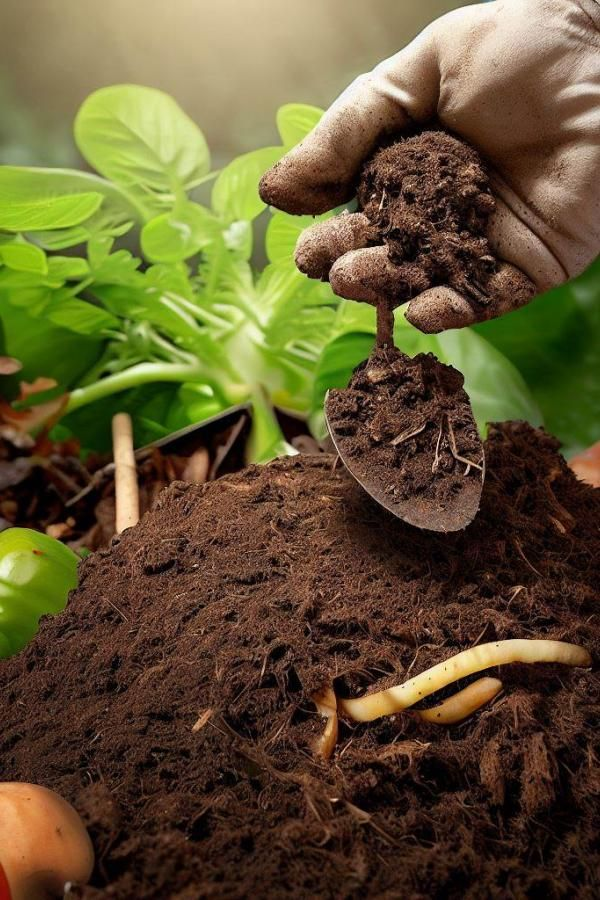

Soil Types in Farming and Agriculture
Soil types are classified based on their physical and chemical properties, which include texture, structure, pH, organic matter content, and nutrient composition. Understanding soil types is crucial for successful farming and agriculture.
Main Soil Types in Agriculture
1. Sandy Soil
- Composition: Largely made up of sand particles
- Texture: Gritty and rough
- Drainage: Excellent drainage, but poor water retention
- Nutrient content: Low in nutrients as they are easily washed away
- Pros: Warms up quickly in spring, good for early crops
- Cons: Dries out quickly, requires frequent irrigation and fertilization
- Suitable crops: Carrots, potatoes, radishes
2. Clay Soil
- Composition: High in clay particles
- Texture: Sticky when wet, hard when dry
- Drainage: Poor drainage, holds water well
- Nutrient content: High in nutrients
- Pros: Retains moisture and nutrients well
- Cons: Can become waterlogged, difficult to work when too wet or dry
- Suitable crops: Wheat, beans, brassicas
3. Silt Soil
- Composition: Made up of intermediate-sized particles
- Texture: Smooth and slippery when wet
- Drainage: Moderate drainage
- Nutrient content: Fairly high in nutrients
- Pros: Retains moisture well, fertile
- Cons: Can form a crust, potentially inhibiting seed germination
- Suitable crops: Most vegetables and fruit trees
4. Loam Soil

- Composition: A balanced mixture of sand, silt, and clay
- Texture: Feels crumbly
- Drainage: Good drainage while retaining moisture
- Nutrient content: High in nutrients
- Pros: Considered ideal for most agricultural purposes
- Cons: Can be depleted if not managed properly
- Suitable crops: Most crops do well in loam soil
5. Peat Soil
- Composition: High in organic matter
- Texture: Spongy
- Drainage: Poor drainage, often waterlogged
- Nutrient content: High in nutrients but may be acidic
- Pros: Rich in organic matter
- Cons: Often needs draining, can dry out irreversibly
- Suitable crops: Vegetables, fruits, and specialty crops like blueberries
6. Chalk Soil
- Composition: High in calcium carbonate
- Texture: Stony
- Drainage: Free-draining
- Nutrient content: Often lacks some nutrients due to high pH
- Pros: Warms up quickly in spring
- Cons: Dries out quickly, can cause nutrient deficiencies
- Suitable crops: Cereals, brassicas, lavender
Importance of Understanding Soil Types
- Crop selection: Different crops thrive in different soil types.
- Irrigation planning: Sandy soils need more frequent watering than clay soils.
- Fertilization strategy: Nutrient-poor soils require more fertilization.
- Tillage practices: Heavy clay soils need different tillage approaches than sandy soils.
- Soil amendment: Knowing your soil type helps in deciding what amendments (like organic matter) to add.
Farmers and agriculturists often use soil testing to determine their exact soil composition and pH level. This allows for more precise management of the soil, including targeted fertilization and pH adjustment if necessary.